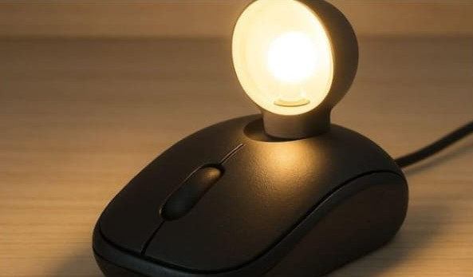

KOLEKSI PRODUK / 01
Mouse Bekas Menjadi Lampu Hias

Ulasan Produk
Mouse komputer yang sudah rusak atau tidak digunakan dapat dimanfaatkan menjadi lampu hias. Casing mouse digunakan sebagai bagian dekorasi lampu, kemudian dipadukan dengan LED dan rangka tambahan agar menghasilkan produk baru yang menarik.
Alat dan Bahan
- Mouse komputer bekas.
- Lampu bertegangan rendah.
- Kabel yang sesuai.
- Rangka atau alas dari barang bekas.
- Lem kuat.
- Obeng dan tang.
- Sakelar kecil (opsional).
Langkah Kerja
- Siapkan mouse bekas dan pastikan tidak terhubung ke sumber listrik.
- Bersihkan casing mouse dari debu dan kotoran.
- Rancang posisi casing mouse pada rangka lampu.
- Pasang lampu bertegangan rendah pada bagian yang sesuai.
- Rapikan kabel dan pasang sakelar jika diperlukan.
- Rekatkan komponen pada rangka dengan kuat.
- Uji lampu menggunakan sumber daya yang sesuai.
Catatan: Perakitan komponen listrik sebaiknya dilakukan dengan pengawasan guru atau orang dewasa. Gunakan modul LED tegangan rendah yang sesuai dan jangan menghubungkannya langsung ke listrik rumah.
Estimasi Biaya
A. Biaya Alat
Alat : Rp 0
B. Biaya Bahan
| Nama Bahan | Harga |
|---|---|
| Mouse bekas | Rp 0 |
| Lampu | Rp 8.000 |
| Kabel | Rp 0 |
| Rangka dan alas bekas | Rp 5.000 |
| Lem | Rp 5.000 |
| Total | Rp 18.000 |
C. Harga Jual
Harga jual lampu hias dari mouse diperkirakan sebesar Rp 28.000 per unit.
D. Laba
Laba bersih per unit = Harga Jual - HPP
Rp 28.000 - Rp 18.000 = Rp 10.000 per unit.
Produk Kreatif dari Barang Bekas
Barang bekas tidak selalu menjadi sampah. Dengan kreativitas, barang yang sudah tidak digunakan dapat diolah menjadi sesuatu yang memiliki manfaat dan nilai jual.
Kembali ke Produk